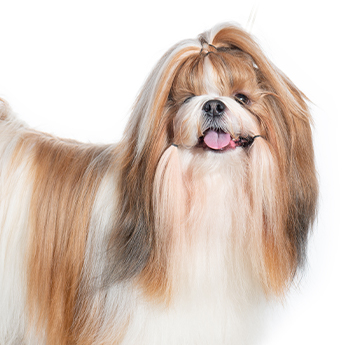

Tudo sobre os incríveis Shih-Tzu

O termo shih tzu vem do mandarim e significa "cão-leão" ou "pequeno leão". A palavra shih traduz-se como leão, enquanto tzu significa pequeno ou filhote
único em sua aparência, cor e tamanho. Não existem dois vira-latas
no mundo!
O Shih Tzu é um cão de companhia de porte pequeno, famoso pela pelagem longa e temperamento dócil. Eles medem entre 25 cm e 30 cm, pesam de 4 kg a 8 kg, e vivem de 10 a 16 anos. São extremamente apegados à família e adaptam-se muito bem a apartamentos
Escovação Diária: Remove pelos mortos e evita nós que machucam a pele.
Limpeza dos Olhos: Área que acumula umidade e secreções; precisa de higiene diária.
Higiene Bucal: Dentes muito juntos acumulam tártaro facilmente; escove regularmente.
Banhos e Secagem: Exigem produtos específicos e secagem total para evitar fungos.